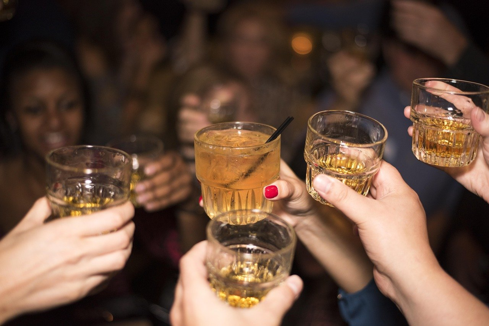

Docks
Seri relaxate la bar
Bar prietenos pentru seri cu băuturi și muzică.
Splaiul Tudor Vladimirescu 16A, Timișoara
Despre Docks
La Docks găsești un bar unde te poți bucura de ceva de băut alături de prieteni.
Atmosfera este relaxată, iar meniul are opțiuni pentru gusturile tuturor.
Barul este pe Splaiul Tudor Vladimirescu 16A, în Timișoara.

-
Muzică
Seri cu băuturi și muzică, la bar.
-
Seri cu prietenii
Atmosferă relaxată, pentru o băutură alături de prieteni.
-
Meniu variat
Opțiuni pentru gusturile tuturor.
Băuturi, cocktailuri și gustări
Exemple — de completat cu ofertele dvs.
-
Băuturi
Ceva de băut alături de prieteni.
-
Cocktailuri
Cocktailuri pentru cei care vor altceva decât o băutură simplă.
-
Gustări
Ceva mic de mâncat, pentru când stați mai mult la masă.
Galerie
Fotografiile sunt ilustrative. Apasă pe una ca să o vezi mai mare.
Vino la Docks
Splaiul Tudor Vladimirescu 16A, Timișoara
Telefon: +40 770 191 893